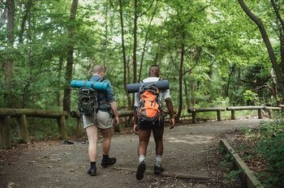

Recreational Activities in Soda Springs
Soda Springs has an abundance of recreational opportunities for individuals and families. Sure many of the bigger cities have every store you could ever want within 20 minutes, but Soda Springs has something that other communities dream of; unlimited recreational opportunities all right in town or within 20 minutes of town!
Want to play golf or disc golf? We have a 9-hole golf course at the west entrance of town and an 18-hole disc golf course 5 minutes from downtown on the east side of town.
Want to go camping? We have camping starting 15 minutes from town, with most camping being near a creek, river or reservoir.
Looking for a good walk or run with beautiful scenery? You have the option of a half a dozen or more paths that start right within the City and many rural roads that run along the mountains and surrounding reservoirs and creeks.
Looking for a leisure country drive? You can take a country drive less than 10 minutes from town with hours of back roads and beautiful scenery to take you on an adventure.
Looking for shopping opportunities? Soda Springs has many local businesses and vendors to take care of your every day needs with "big-city" shopping within an hour drive and some of the most beautiful views to accompany you on the drive.
Source: sodaspringsid.com